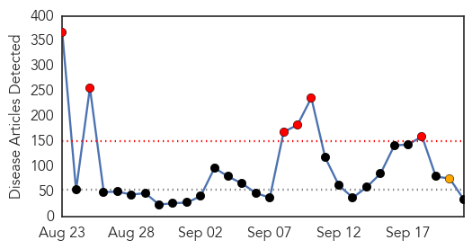
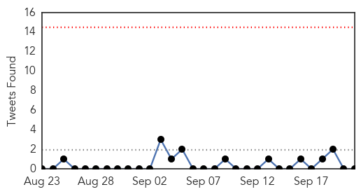
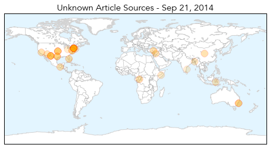

30 Day Trends
Web: 6 alerts, 1 warnings
Twitter: 0 alerts, 0 warnings
Top Articles:
- 0.982
- Schumer wants better tracking of unusual respiratory illness in NYC
- 0.973
- CDC offers new flu vaccine guidelines
- 0.932
- Congo virus may take epidemic shape in city
- 0.922
- Rabies: The key word is prevention
- 0.917
- Chicago Tribune
- 0.917
- Chicago Tribune
- 0.917
- Chicago Tribune
- 0.917
- Chicago Tribune
- 0.895
- Schumer urges CDC to address virus
- 0.895
- Over 700 Texas Infants Exposed To Tuberculosis At Hospital (VIDEO)
- 0.866
- Protester hold placards during Climate Change March in Berlin
- 0.866
- Children march during a rally against climate change in New York
- 0.866
- A woman holds up a sign that reads "Against Climate Change" during a demonstration in Buenos Aires
- 0.866
- Catholics attend a rally against climate change in New York
- 0.866
- People hold posters during a Climate Change march to demand politicians take tougher action to protect the climate at Angel de la Independencia monument in Mexico City
- 0.866
- A protester flies anti-nuclear energy kites during Climate Change March demanding politicians take tougher action to protect the climate in Berlin
- 0.866
- Russia's Lavrov tells U.S. counterpart
- 0.866
- Residents sit on Medano beach before the possible arrival of Tropical Storm Polo in Cabo San Lucas, after Hurricane Odile hit Baja California
- 0.866
- Protester holds a banner as he participates in a rally called the Climate Change Action March in Sydney
- 0.866
- Protester carries a banner referring to Australian Prime Minister Tony Abbott as he participates in a rally called the Climate Change Action March in Sydney
- 0.856
- How to avoid enterovirus
- 0.829
- More than 700 babies exposed to TB at Texas hospital
- 0.827
- More Than 700 Infants Exposed to TB at El Paso Hospital
- 0.803
- New Haven briefing planned on children’s virus
- 0.769
- 700 babies maybe exposed to TB at Texas hospital
- 0.752
- 90 percent of kids who died last flu season didn't get vaccine, CDC says
- 0.746
- Scrub typhus death reported in Kota district, Rajasthan state
- 0.727
- More than 700 Texas infants exposed to tuberculosis at hospital
- 0.701
- Lyme Activists Target IDSAs IDWeek Conference
- 0.679
- One patient dies every hour at DMCH, road accident a prime cause
- 0.636
- Water shortage hits Somali regions
- 0.580
- Toxic Algae Contaminates Oregon River
- 0.569
- NDRF launches advanced medical facilities to expedite rescue efforts in J-K
- 0.554
- 700 Babies in Texas Potentially Exposed to Tuberculosis
- 0.505
- Awareness on Idiopathic Pulmonary Fibrosis
Top Tweets:
-
No tweets found for Sep 21, 2014
Web/News Articles
Tweets
Article Locations
Article Confidences